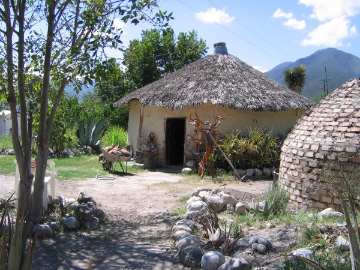

Este paraíso único en la región se localiza en el km. 97-98 de la carretera Victoria-Tula,
a 15 km. de la cabecera municipal de Jaumave. Enclavado a los pies de la Sierra Madre Oriental, en el Altiplano
Tamaulipeco, se encuentra el cálido y bonito Spa Ex-Hacienda La Florida, en donde se respira aire puro y se
disfruta de la naturaleza, cerca de los paraísos naturales del Charco o Poza Azul en Jaumave y El Salto en Palmillas.

El Spa Ex-Hacienda La Florida cuenta con todas las instalaciones y servicios necesarios para brindar a sus
visitantes largas horas de descanso y recreación: arquitectura rústica, abundante vegetación, albercas,
palapas, cabañas, restaurant, la casita rosa (suite de spa) temazcal, bar, billar, gimnasio y la Plaza de las Estrellas.
Uno de los servicios mayormente solicitados por los turistas es el temazcal, la cual es una tradición
milenaria usada por nuestros antepasados para hacer curaciones, limpieza y purificación del cuerpo y el
espíritu. Su uso a través de la historia ha sido tanto terapéutico como ritual y ceremonial y su práctica
sobrevive en la actualidad gracias a la tradición y costumbres de las distintas comunidades indigenas.
Antes de entrar al Temazcal se hacen ritos, danzas y cnatos a los Dioses de los cuatro elementos y de
esta manera se integraban para alcanzar una mejor sanación mental, fisica, emocional y espiritual.
Dedique a su cuerpo y mente el tiempo que se merecen en el mejor Spa del Altiplano Tamaulipeco. Naturaleza,
atención y cuidado. Variedad de tratamientos a la punta de la vanguardia en México, con un escenario paradisiaco
y magico como lo es la Ex-Hacienda La Florida a la sombra de sus Nogales y la musicalidad de su riachuelo.
Avalado por la asociación de terapeutas de spas en Nuevo León.
Tips del turista:
-Lleva contigo el traje de baño y sandalias.
-El clima es predominantemente seco por lo cual es recomendable el uso de bloqueador solar, sombrero o gorra y lentes o gafas de sol.
-Recuerda traer contigo el celular y camara fotografica para tomar las mejores fotografias de este maravilloso sitio.